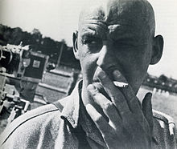

Overview
He was an artist in Russia during the Constructivist movement and is one of the most important avant-garde artist to have used his art in political revolution. By the end of the 1910s he was pioneering Constructivsm. His commitment to the revolution encouraged him to abandon painting in 1921. He embraced art in a more functional form and began collaborating with the poet Vladimr Mayakovsky on an advertising campaign. Photography was very important to him in the 1920s and he influenced greatly photography in Europe.
Early Years
He began at the Kazan School of Art and studied their from 1910 to 1914 under Nikolai Feshin and Georgii Medvedev. He quickly learned basic principals of academic training, and achieved high praise from instructors. He moved to Russia in 1915 and permanently settling there in 1916. Through his acquaintances with liberal thinkers, he found himself at the heart of the Bolshevik Revolution in 1917.
Career
During his work organizing provincial museums, he trained artists to serve the communist state at the Higher Technical Artistic Studios. He taught the same principals that started his artistic discourse. In 1921 he joined the productivist movement, a group of artists devoted to the idea of incorporating artistic forms into the daily lives of normal people. Most importantly, he became involved with bringing Communist forms into mass visual propaganda of the Bolsheviks.